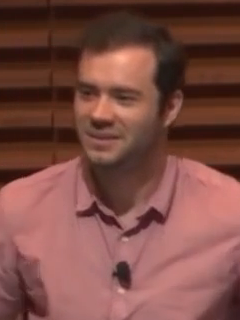

2강. AI와 함께
도시 문제 정의하기
당신이 바꾸고 싶은 도시의 문제는 무엇인가?
- 지난주에 세 개로 좁혀 왔다
- 그중 하나를 오늘 분석할 수 있는 문제로 바꾼다
- 혼자 하지 않는다 — 클로드와 같이 한다
주장에는 세 부분이 있다
셋 중 하나라도 비면 설득이 안 된다. 문제 정의는 이 셋을 미리 정해 두는 일이다.
정리해서 말하려다 아무 말도 못 한다
머릿속이 정리되지 않았을 때 우리는 AI에게 묻기를 미룬다. 먼저 정리해야 한다고 여기기 때문이다.
안드레이 카파시는 반대로 한다. 정리하지 않은 채 음성으로 10분쯤 두서없이 쏟아내고, 그것을 조리 있게 다시 정리해 달라고 맡긴다. 직접 정리해 전달하는 것보다 결과가 낫고 이어지는 대화도 매끄럽다고 말한다.
카파시의 X 게시물 (2026. 7. 21.) — 주소는 마지막 장에

Gladwin Analytics, 2019
Wikimedia Commons · CC BY 3.0
왜 두서없이 말하는 편이 나은가
스스로 정리하는 동안 버려지는 것이 있다 —
확신이 서지 않아 뺀 관찰, 사소해 보여 지운 사례,
말이 안 될까 봐 접어 둔 짐작
→ 문제 정의 단계에서는 그것들이 오히려 재료다.
정리는 AI가 대신할 수 있지만, 버린 재료는 되살릴 수 없다
오늘 밟을 여섯 단계
잘 쓰인 문제 정의는 이렇게 생겼다
COMPAS 공모전 과제는 네 부분으로 되어 있다
| 항목 | 무엇을 적나 |
|---|---|
| 분석배경 | 왜 지금 이 문제인가 — 무엇이 달라졌고 무엇이 부족한가 |
| 분석목적 | 이 분석으로 무엇을 밝히려 하는가 |
| 해결내용 | 구체적으로 무엇을 도출할 것인가 (필수/선택을 나눠 적는다) |
| 필수 고려사항 | 어떤 함정을 피해야 하는가, 무엇은 하면 안 되는가 |
읽어 보면 판단이 필요한 자리가 전부 문장으로 드러나 있다. 오늘 만들 문제정의서의 목표 형태다.
예: 폭염 대응 우선관리지역 도출 (2026) — "단순히 지표면 온도만 고려하지 말 것", "선정 기준과 근거를 반드시 제시할 것" 같은 단서가 붙어 있다.
주장마다 어울리는 증거가 다르다
| 주장의 꼴 | 어울리는 증거 | 제시 방식 |
|---|---|---|
| "심각하다" | 수준과 규모 | 수치 한 줄 · 다른 도시와 비교 |
| "나빠지고 있다" | 시간에 따른 변화 | 추이 그래프 |
| "특정 지역이 불리하다" | 지역 간 차이 | 지도 · 순위표 |
| "이것 때문이다" | 관계와 통제 | 산점도 · 회귀 결과 |
| "이 대안이 낫다" | 대안 간 비교 | 시나리오 표 · 비용편익 |
마지막 두 줄은 9주차 이후에 배운다. 오늘은 내 주장이 어느 줄인지만 정하면 된다.
문제정의서 — 한 쪽짜리
| 칸 | 쓰는 법 |
|---|---|
| 문제 | 누가 어떻게 곤란한가. 한 문장 |
| 주장 | "…해야 한다" 로 끝나는 한 문장 |
| 필요한 증거 | 주장을 받치려면 무엇을 보여야 하나. 2~3개 |
| 제시 방식 | 증거마다 표·그래프·지도 중 무엇으로 |
| 데이터 | 어떤 자료가 있어야 하나 (3주차에 실제로 찾는다) |
| 분석 방법 | 기술적·진단적·예측적·처방적 중 어디에 해당하나 |
이 한 쪽이 학기 끝까지 따라간다. 3주차에 데이터를 찾고, 14주차에 증거 패키지로 완성한다.
실습
문제정의서 만들기 — 약 1시간 30분
실습 ① — 준비
- claude.ai 계정을 만든다. 실습은 Pro 구독 기준이다 10분
- compas.lh.or.kr 회원가입 — 3주차부터 데이터를 받는다 5분
- 음성 입력을 켜 둔다. 손으로 치면 저절로 정리하게 되어 램블링이 안 된다 5분
클로드 코드(터미널)는 4주차에 설치한다. 오늘은 웹 화면이면 충분하다.
실습 ② — 10분 동안 두서없이 말한다
정리하려 하지 말 것. 틀려도 되고 앞뒤가 안 맞아도 된다
시작 프롬프트
"지금부터 정리되지 않은 이야기를 10분쯤 할 거야. 앞뒤가 안 맞거나 틀린 말이 섞일 수 있어. 끊지 말고 다 들은 뒤에, 내가 무슨 문제를 말하고 있는지 조리 있게 다시 정리해 줘. 내가 확신 없이 말한 부분은 따로 표시해 줘."
무엇을 말하나 — 떠오르는 대로
- 지난주에 좁혀 온 문제 후보 중 하나
- 언제 어디서 그게 불편했는지, 누가 곤란해 보였는지
- 왜 그런 것 같은지 — 짐작이어도 말한다
- 이미 뭔가 하고 있는 것 같은데 왜 안 되는 것 같은지
10분을 채운다. 3분에서 멈추면 재료가 모자란다.
실습 ③ — 여섯 단계로 좁힌다
재구성된 글을 읽고, 아래를 차례로 물어 확정한다
이어지는 프롬프트
③ "정리해 준 것 중에서 내가 진짜 주장하고 싶은 건 ○○야. 이걸 '…해야 한다' 는 한 문장으로 다듬어 줘."
④ "이 주장을 받치려면 어떤 증거가 필요할까? 각각 왜 필요한지도 같이 적어 줘. 3개 이내로."
⑤ "증거마다 표·그래프·지도 중 무엇으로 보여 주는 게 설득력 있을까?"
⑥ "그러려면 어떤 데이터가 있어야 하고, 어떤 분석이 필요할까? 구할 수 없을 것 같은 데이터는 그렇게 말해 줘."
답을 그대로 받아쓰지 않는다. 고르고 자르는 것은 나다 — 증거가 다섯 개로 늘어나면 문제가 아직 넓다는 뜻이다.
실습 ④ — 한 쪽으로 옮긴다
- 앞의 여섯 칸 표를 채운다. 대화 로그를 그대로 내지 않는다 20분
- 다 쓴 뒤 클로드에게 마지막으로 묻는다 — "이 문제정의서에서 가장 약한 고리가 어디야?" 10분
- 지적받은 곳을 고치거나, 고치지 않기로 했다면 그 이유를 아래에 적는다 10분
제출: 문제정의서 1쪽 (과제 반영)
다음 주에는 여기 적은 데이터를 실제로 찾아 받는다. 구할 수 없는 데이터를 적어 두면 3주차에 막힌다 — 그것도 배움이니 그대로 가져와도 좋다.
자료 출처
- 램블링 방식 — 안드레이 카파시의 X 게시물 (2026. 7. 21.)
x.com/karpathy/status/2079610838143623371 - 카파시 사진 (4쪽) — Gladwin Analytics, 2019 · CC BY 3.0
commons.wikimedia.org · File:Andrej Karpathy, OpenAI (cropped).png - 문제 정의의 네 부분 (7쪽) — COMPAS 공모전 과제 개요의 구성
compas.lh.or.kr
Q & A
권규상 Kyusang Kwon
kyusang.kwon@chungbuk.ac.kr